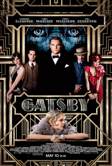
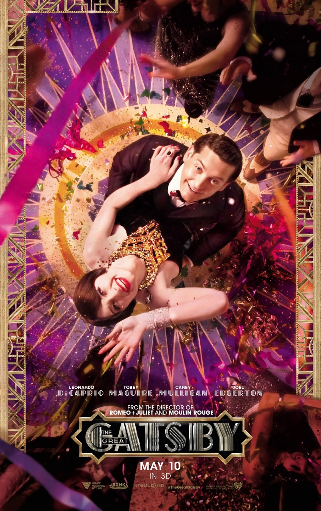

Durata: 142 min
Genere: drammatico, sentimentale
Anno di uscita: 2013
Regista: Baz Luhrmann

Stati Uniti d'America, inverno del 1929. Nick Carraway, un veterano della prima guerra mondiale laureatosi all'università di Yale, si trova in un ospedale psichiatrico per curare la sua dipendenza da alcol.
Durante una seduta con il suo medico psichiatra Walter Perkins, Nick inizia a parlare di quello che definisce l'uomo più promettente che avesse mai incontrato, Jay Gatsby.
Il medico, notando la difficoltà di Nick nell'esprimere a parole i suoi pensieri, gli suggerisce di scrivere ciò che sta pensando, dal momento che la scrittura è la sua vera passione.
